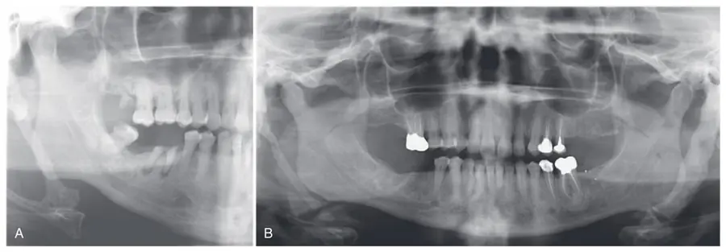
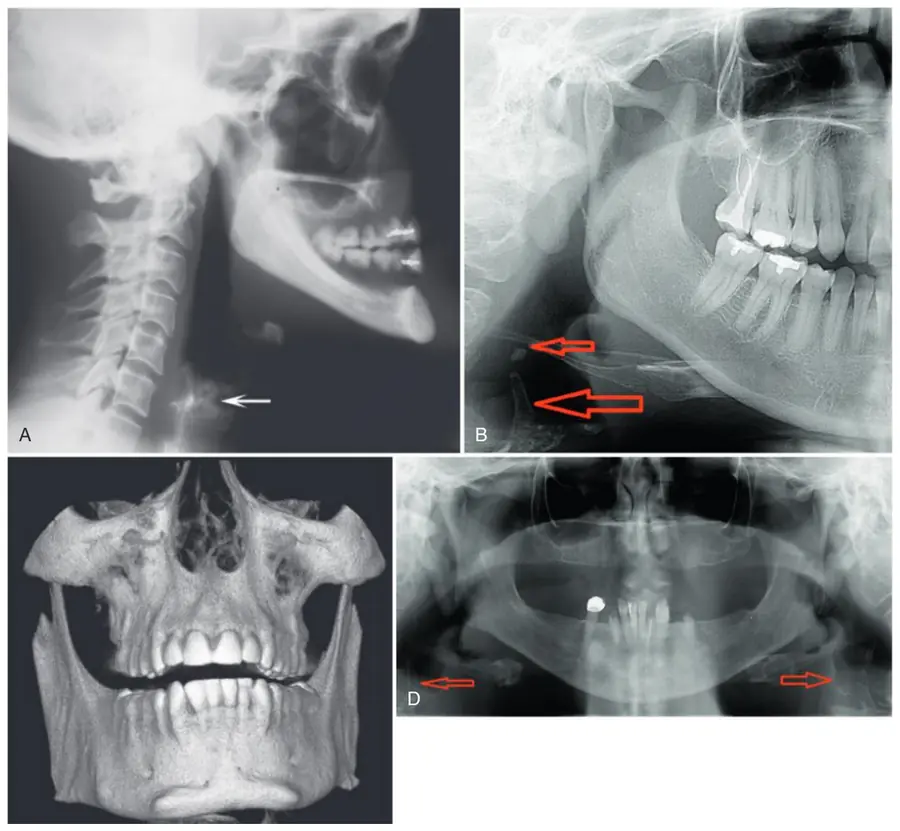

نسخه استخراجشده؛ ترجمه یا تأیید علمی انجام نشده است. وضعیت: captured
ریشهی جنینی، ساختار را توضیح میدهد: «زائدهی استایلوئید از قوس برانشیال دوم (غضروف رایشرت) برمیخیزد، که از چهار بخش ساخته شده و به زائدهی استایلوئید و لیگامان استخوانیشده — کمپلکس استایلوهیوئید — میانجامد.»

و الگوی استخوانی شدن: «معمولاً از قاعدهی جمجمه به پایین امتداد مییابد و معمولاً دوطرفه رخ میدهد. ولی در موارد نادر، استخوانی شدن از شاخ کوچک استخوان هیوئید آغاز میشود، و در موارد نادرتر، از ناحیهی مرکزی لیگامان.»
و مهمترین عدد این درس، همراه با مهمترین هشدارش: «علائم در تقریباً ۴٪ بیماران با زائدهی استایلوئید طویل یا لیگامان استخوانیشده رخ میدهند، و همبستگی اندکی میان گسترهی استخوانی شدن و شدت علائم همراه وجود دارد.»
و افراد مبتلا معمولاً بالای ۴۰ سالند. و زائدهی طویل «میتواند با لمس روی لوزه بهعنوان ساختاری سفت و نوکتیز کشف شود».
و حالا دو چهرهی سندرم ایگل — تفکیکشان بر پایهی سابقه است:
و کدام شایعتر است؟ «سندرم شریان کاروتید شایعتر از سندرم ایگل کلاسیک است.»
و علائم ایگل کلاسیک: «درد مبهم و آزارنده تا شدید در حلق هنگام سخن گفتن، جویدن، بلعیدن (که احساس جسم خارجی در گلو برمیانگیزد)، چرخاندن سر، یا باز کردن گستردهی دهان — بهویژه هنگام آواز خواندن یا خمیازه — و وزوز گوش یا گوشدرد.»
و علائم سندرم شریان کاروتید، بسته به اینکه کدام شریان درگیر است:
و یک نکتهی ظریف که نشان میدهد استخوانی شدن همیشه لازم نیست: «درد از تحریک مکانیکی شبکهی عصبی سمپاتیک پریآرتریال روی شریان برمیخیزد، که کاروتیدینی ناحیهای میسازد؛ این میتواند حتی در نبود استخوانی شدن کمپلکس استایلوهیوئید رخ دهد. تنها انحراف زائدهی استایلوئید — معمولاً به داخل — لازم است تا نوک زائده به شریان فشار بیاورد.»
روش انتخابی، پانورامیک نیست: «استخوانی شدن لیگامان استایلوهیوئید معمولاً بهعنوان یک ویژگی اتفاقی روی پانورامیک کشف میشود. CT استاندارد طلایی برای کشف رادیوگرافیک و ارزیابی نزدیکی زائدهی طویل یا لیگامان استخوانیشده به ساختارهای عصبی و عروقی حیاتی است.»

و مسیرش روی پانورامیک: «استخوانی شدن خطی از ناحیهی زائدهی ماستوئید به جلو امتداد مییابد و از جنبهی خلفی-تحتانی راموس به سمت استخوان هیوئید عبور میکند.» و استخوان هیوئید «تقریباً موازی با کورتکس تحتانی مندیبل یا سوپرایمپوز روی جنبهی خلفی آن» قرار میگیرد.
و شکل و اندازه: «زائدهی استایلوئید به شکل زائدهای بلند، باریکشونده، نازک و رادیواوپک دیده میشود که در قاعده ضخیمتر است و به پایین و جلو تا نقطهای تقریباً سوزنی بیرون میزند. طول طبیعیاش از حدود ۰٫۵ تا ۲٫۵ سانتیمتر است.»
و مشهورترین نشانهی تصویری این درس: «هرچه لیگامان استخوانیشدهی رادیواوپک بیشتر به سمت هیوئید امتداد یابد، احتمال بیشتری دارد که با اتصالات رادیولوسنت و مفصلمانند — سودوآرتیکولاسیون — قطع شود.»
و ساختار داخلی: «استخوانی شدنهای کوچک همگن رادیواوپک دیده میشوند. با افزایش طول و قطر، کورتکس بیرونی این استخوان به شکل نواری رادیواوپک در محیط آشکار میشود.»
و افتراقش ساده است: «وقتی علائم همراه با استخوانی شدن کمپلکس استایلوهیوئید رخ دهند، شواهد متمایزی از استخوانی شدن لیگامان در تصاویر تشخیصی هست. شانس اندکی وجود دارد که شکایت با موجودیت دیگری اشتباه شود.»
و مدیریت، پلکانی است: بیشتر بیماران بیعلامتاند و مدیریتی لازم نیست. برای تأیید تشخیص: «با بیحسی موضعی برای مهار رفلکس گگ، لمس فوسای تانسیلار برای بازآفرینی علائم و کشف تودهی سفت زیرمخاطی.» برای بیماران خفیف علامتدار: «تزریق استروئید با هدایت سونوگرافی.» برای بیماران با علائم شدید یا پایدار: «استایلوئیدکتومی ترنسکرانیال یا جراحی روباتیک ترنساورال.» و «مدلهای چاپ سهبعدی میتوانند در تعیین گستره و جهت محل جراحی کمک کنند تا ساختار مزاحم بدون آسیب به آناتومی اطراف برداشته شود».
و حالا غضروفهای حنجره — که در همان ناحیه دیده میشوند و باید از پلاک آترومی جدا شوند.
و پایهی بافتیاش: «اپیگلوت و زوائد صوتی غضروفهای آریتنوئید، غضروف فیبروالاستیکاند، در حالی که همهی غضروفهای باقیماندهی حنجره از غضروف هیالن ساخته شدهاند. کلسیفیکاسیون و استخوانی شدن آندوکندرال غضروفهای هیالن حنجره میتواند از سن بلوغ اسکلتی آغاز شود و پس از آن بهعنوان یک فرایند فیزیولوژیک پیش رود.»
و محل غضروف تریتیشس، دقیقاً همان جایی است که پلاک کاروتید هم میافتد: «غضروفهای تریتیشس کوچک و جفت، درون لیگامانهای تیروهیوئید جانبی یافت میشوند. این غضروفها روی تصویر جانبی جمجمه یا پانورامیک، درون بافتهای نرم حلق، پایینتر از شاخ بزرگ استخوان هیوئید و مجاور مرز فوقانی مهرهی چهارم گردنی (C4) دیده میشوند.» و «شاخ فوقانی غضروف تیروئید کلسیفیه، داخلی نسبت به C4 دیده میشود و روی بافت نرم پیشمهرهای سوپرایمپوز است».
و اندازهی تریتیشس، از نامش میآید: «واژهی تریتیشس به معنای «دانهی گندم» است، و غضروف تقریباً ۷ تا ۹ میلیمتر طول و ۲ تا ۴ میلیمتر عرض دارد.» محیطش «خوشمرز و صاف است و هندسهاش بینهایت منظم». و ساختار داخلیاش «عموماً همگن رادیواوپک است، هرچند گاهی یک کورتکس محیطی قابل شناسایی است».
و از غضروف تیروئید، «معمولاً تنها ۲ تا ۳ میلیمتر بالایی در لبهی پایینی پانورامیک دیده میشود».
و کلید تفکیک از پلاک آترومی — دو معیار: «ماهیت منفرد غضروف و اندازه و شکل بینهایت یکنواخت آن باید به دندانپزشک اجازه دهد میان این دو تفکیک قائل شود.» و «هیچ مدیریتی برای غضروفهای حنجرهی کلسیفیه لازم نیست».